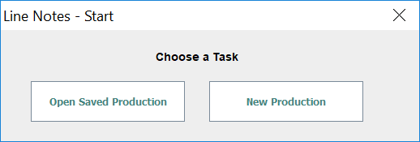
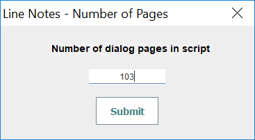
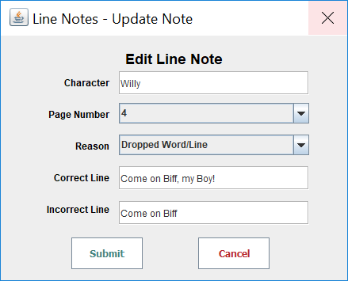

Line Notes Software
Help Documentation
User Guide
Updated June 2020
A Free Theatrical Stage Management Software
It is usually the case that theatrical stage managers need to take notes every time an actor makes an error when delivering a line. Actors also need to be reminded about every time they have “called for line”. This can be a time consuming process and generally not a fun task. As a former stage manager I loathed this process, it took hours to hand-write the notes, so back in 2006 I wrote a very simple piece of software now called “Linenotes.” "Linenotes" is a simple database software that tracks and manages line notes for theatrical stage managers. It is based in the Java development framework and is very simple to use. The following user guide briefly covers how the software works and how to get the most out of it.
Software Screenshot
Line Notes v3.1
I created the software "Linenotes" in 2006 to help stage managers simplify the process of notating and giving line notes to actors. It is a user-friendly software that stores the errors that actors make during rehearsal and makes it easy for stage managers to organize and distribute those notes
Export options for stage managers include, word doc, email, web page, or a simple 'copy-paste'.
Do not duplicate without permission.
Copyright 2006-2020
Ben Crop, MBA
www.bencrop.com
bencrop@gmail.com
Getting started with Linenotes is simple
After installing Java and downloading Linenotes (see How to Install), getting started is easy. Double-click on the Linenotes software to begin.
As the software loads, you will see two dialog screens, program credits, and startup.
Credits Loading Screen
Start Dialog
This startup gives you the option to pick up where you left off or begin a new production. Choosing “Open Saved Production” gives you the option to search for a previously saved production (see opening a production below), and clicking “New Production” will walk you through entering the production name and total number of pages in the script before bringing you to the main interface.
Production Name Dialog
Number of Pages Dialog
The “Enter total number of pages in the script” dialog box is asking you to enter the page number of the final page in the script. This number will be used to auto-populate the “page number” drop down used when submitting a linenote.
Once the requisite name and pages have been entered, you will see the main interface of the program which lets you easily enter line notes, edit, save, and export them.
A simple interface for improved efficiency
The Linenotes interface is streamlined for easy note taking and designed with the stage management process in mind. Here is an overview of the interface:
Main Software Window
- The Menu: here you will find tools to edit, export, and save your Linenotes file. (See Navigating the Menu below)
- Character Name Field: here, type the name of the character who made a line error. This is the one filed that does not clear when submitting a line note.
- Page Number Drop-down: here select the page that the line error occurred.
- Reason for Note Drop-down: here select the reason for the line note, be it dropping a word, calling for line, or others.
- Correct Line Field: here type the correct line as it appears in the script.
- Incorrect Line Field: here type the incorrect line that the actor said in place of the correct line.
- Submit button: Press this button to enter the completed line note into the database of line notes. This button will also clear all of the text fields except for the Character Name filed.
- Clear Button: Press this button to clear and reset all of the above fields.
- Number of Notes Indicator Label: This label will auto-increment as you save a new note. This serves two purposes, 1) to help you verify that the note has been submitted, and 2) to make you feel good about just how many notes you have entered into the system. This field will also update when a new file is opened to verify how many notes are in that file.
Four Menus to Access all Linenotes Tools
The File Menu
File Menu
In the file menu, you will find tools to create a new production or open a production (see Opening a Production below). You can also save and print the current production or quit the software (see Saving a Production and Printing below).
The Edit Menu
Edit Menu
The edit menu contains tools that will help you edit and delete saved line notes (see Editing a Line Note and Deleting a Line Note). In this menu you can also change production information (see Changing Production Variables below). You can also adjust the autosave reminder here (see Autosave below).
The Export Menu
Export Menu
The export menu’s function should be obvious. It is the place to go to export all line notes to many different formats (see Exporting Line Notes below)
The Help Menu
Help Menu
The help menu has two options, “Help” and “About Line Notes”. The “Help” item will take you to this website for the user guide. Clicking on “About Line Notes” will bring up the credits dialog so you know what version you are working on. It also helps you contact me, if needed.
How to Submit
The main thing you will use this software for is submitting a line note. Simply enter information into the required fields outlined in The Interface above. Then press the “Submit” button to enter the completed line note into the database of line notes. This button will also clear all of the text fields except for the Character Name field.
Use the TAB key for improved efficiency
After entering information into the “Character Name” field, instead of clicking on the next field, simply press the TAB key. This key will automatically move you through all of the fields in the main form. When you finally get to the Submit button, simply press the spacebar to submit the note. The cursor will automatically highlight the “Character Name” field so you can begin this quick process again.
Fix Small Mistakes by Editing a Line Note
Sometimes, you will need to edit a line note that you have already entered into the system. Maybe the page number is incorrect, or you misspelled a character’s name. This can be easily done in the "Edit Line Note" dialogue box. To open the Edit Line Note dialog, navigate to Edit > Edit Line Note Entry.
Edit Line Note Dialog
The functionality of this application window is very basic. You will see all line notes populated into the text area. The line notes can be sorted by character name or page number, otherwise they are in the order in which you entered them in the first place. Each note will have a number before it (e.g. “Entry Number: 1” as an example. In the “Entry to Edit” picker, choose the line note entry you would like to edit. In this case, choosing “1” and pressing submit, will allow you to edit “Entry Number: 1”. After selecting a note and pressing “Submit” you will see the Update Line Note window
Update Line Note Dialog
When the Update Line Note dialog box opens, it will auto-populate the note that you previously entered. You can then make any changes to the note, and press submit for the note to be updated in the system. Pressing Cancel will abort the editing process.
Removing Unneeded Line Notes
Sometimes you will need to remove a line note that you have already entered into the system. Maybe the note was unneeded, or perhaps you already talked to the actor about the note and do not need it in the system anymore. This can be easily done in the "Delete Line Note" dialogue box. To open the Delete Line Note dialog, navigate to Edit > Delete Line Note Entry.
Delete Line Note Dialog Box
The functionality of this application window is very basic. You will see all line notes populated into the text area. The line notes can be sorted by character name or page number, otherwise they are in the order in which you entered them in the first place. Each note will have a number before it, “Entry Number: 1” as an example. In the “Entry to Edit” picker, choose the line note entry you would like to delete. In this case, choosing “1” and pressing submit, will allow you to delete “Entry Number: 1”. After selecting a note and pressing “Submit” you will ask for confirmation to delete that note. After you confirm, the note will be deleted from the system. You will see the total number of notes decrease by one as confirmation that the note is deleted.
Save Often
There is nothing worse than spending an hour entering line notes only to have your computer crash and lose all of your work. Saving is an important step in maintaining sanity and ensuring that your work lasts. You will find the save command in the File Menu (File > Save Production).
Save a Production Dialog Box
The software automatically creates a filename for you of the production name and today’s date. Save the file anywhere on your computer or to the cloud. The software will save the file as an .lnote file. .lnote files do not associate with Linenotes directly. This is done to make the software more distributable. You can also edit this file in a standard text editor if you need. However the software will only open .lnote files
Open a Saved Production
You will find the open command in the File Menu (File > Open Production). Pease note that this will overwrite any existing production. So be sure to save the current production if you intend to open another file.
Opening a Production Dialog Box
After launching the Open Production Dialog, navigate to the place on your computer where the Linenotes Files is stored. The software will open allow you to open files with a .lnote file extension. Simply select the file you wish to open and press the “open” button. The main interface will update with the total number of line notes in the production file to verify that the file was successfully opened.
Five Different Export Options
Perhaps one of the most useful features of the Linenotes software is its ability to export the entered notes into many different formats for sharing with actors and other production members. There are five different “export” commands available, described below.
Export to Word Doc
To export to .doc, select Export > Export all to *.doc from the main menu. Well, actually this exports a Rich Text File (.rtf). The beauty of an .rtf file is that it can be read in all document editor softwares, from Microsoft Word and Apple’s Pages to Google Docs and Open Office. This export option has the best formatting. I like to use it because after opening the file on your computer, you can do a quick spell check before sending it out to actors as an email attachment. After completing the export, choose where to save the files and you can view them on your local machine before sending them out.
Export to HTML
To export to HTML, select Export > Export all to HTML from the main menu. This option if for more advanced users. This export option will create multiple HTML files. One file will contain the name of the production and date and list all of the characters who have notes. There will be subsequent files for each character. After competing this export step, choose where to save the files and you can view them on your local machine. If you have access to a web server, simply upload them there and send the link you production members. This will save paper and email space if that is of need to you.
Export to Email
A new feature in Linenotes v. 3.1, export to email is designed for the stage managers on the run. To export to email select Export > Export all to Email from the main menu. There are no additional steps required. After pressing this button, your default email editor will open with an email of all of the linenotes with an automatic subject. The only thing you need to change is the To: line of the email. Replace “Performers@theatre.com” with the email addresses of actors and production personnel you want to send it to.
If this is not working for you, it may because your computer’s default email software is not setup properly. To change your default email on a windows machine, go here. To change your default email on a Mac, go here.
Export to Text
This is perhaps the most basic export option. To export to .txt, select Export > Export all to *.txt from the main menu. This is very similar to export to .doc above. But this is in plain text with no formatting. This can be useful if you have no text editors installed on your computer. After completing the export, choose where to save the files and you can view them on your local machine before sending them out.
Quick Export
While users of the older version of the software may see this is a new feature in Linenotes v. 3.1, it is simply an interface redesign. Previously, there was an export by character, page number, and note reason on the main form. This has now been moved to the Quick Export tool. To use quick export, select Export > Quick Export from the main menu.
Quick Export Dialog Box
Quick export gives you access to notes at your fingertips. Simply select the character, page number, or Reason and press the corresponding button (i.e. to get the notes just for one character, select the character’s name form the drop down and press the “Get Notes By Character” button). Also on this page, you can export all of the notes, clear the text field and copy all of the notes in the text filed to the clipboard so that you can paste them to any software of your choosing.
How to Change the Production Name and Total Page Numbers
Sometimes you need to change the production name or the current page numbers in the script. This is usually because it was entered incorrectly in the first place.
Change Production Name
To change the production name, click on Edit > Change Production Name. The Change Production Name Dialog will appear. Simply type in the new production name and press submit. Pressing Cancel will make sure a change is not made.
Change Production Name Dialog
Change Total Pages in script
To change the total number of pages in the script, click on Edit > Change Total Pages in Script. The Change Total Pages in Script Dialog will appear. Simply type in the new number of pages and press submit. Pressing Cancel will make sure a change is not made.
Change Total Number of Pages in Script Dialog
A Friendly Reminder to Save Your Work.
A Reminder to save your work every 5 minutes
A new feature to Linenotes 3.1, the software will automatically remind you to save your work. Some users will find this a blessing, others will hate the constant reminder. But fear not, the autosave reminder can be changed or disabled at any time. To adjust the autosave settings, navigate to Edit > Change or Disable Autosave in the main menu.
Change or Disable Autosave Dialog
To disable autosave, simply press the disable button (don’t worry, you can re-enable it any time). To change the autosave frequency, type in the number of minutes you would like the new interval to become and press submit. It’s that easy.
For the People Who Still Require Paper Copies
The print function is admittedly modest and featureless. It does however work as designed. To print your linenotes, navigate to File > Print and the print dialog will appear.
Print Dialog
The print window functions as you would expect as most print dialogs do. You can change the page setup in File > Page Setup, and pressing Print in File > Print will let you choose a printer and your print settings and away you go.
I still prefer to export the notes to .doc and print them from a word editing program. That way I can spell-check them, and the formatting looks much better.